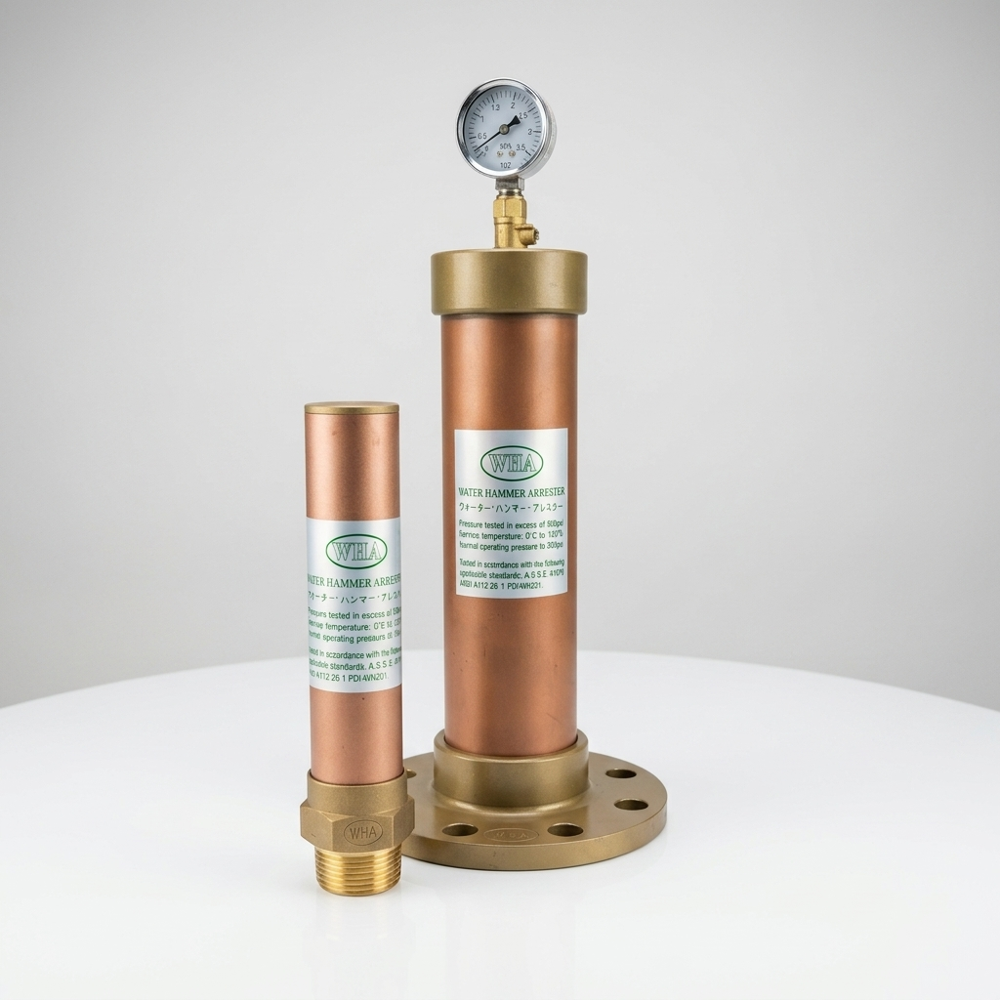

總毅實業有限公司
← 返回首頁
水錘吸收器 WHA
Water Hammer Arrester | 有效吸收水擊衝擊，延長大樓管路與閥門壽命

產品特點與效益
消除水錘衝擊：
有效吸收閥門快速關閉或水泵啟停瞬間產生的劇烈壓力波。
保護管路安全：
降低管路震動與噪音，防止管道接頭鬆脫、爆裂及設備損壞。
結構堅固耐用：
本體採用高規格材質製造，使用壽命長。
安裝靈活方便：
適用於各類大樓給水主幹管、高壓泵浦出口、消防及工業水務管路。
技術規格與說明
產品名稱
水錘吸收器
主要材質
不鏽鋼 / 砲金銅
適用口徑
牙口 / 法蘭口連接均可詢問
適用場所
高層建築給水管路、揚水泵浦出口、自動關閉閥門前段防護
需要水錘吸收器詳細規格、圖面或產品報價？
歡迎直接來電洽詢，或透過官方 LINE / Email 傳送您的工程需求！
立即聯絡總毅實業